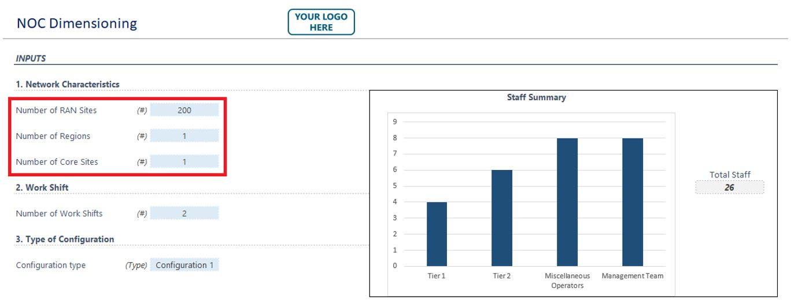
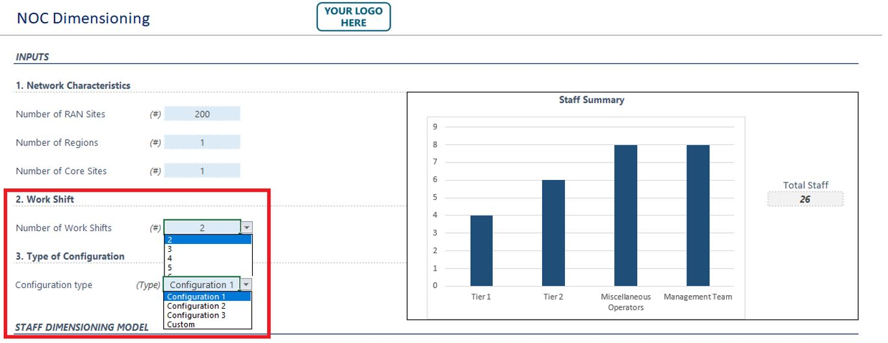
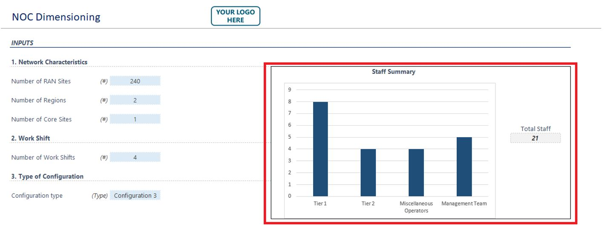
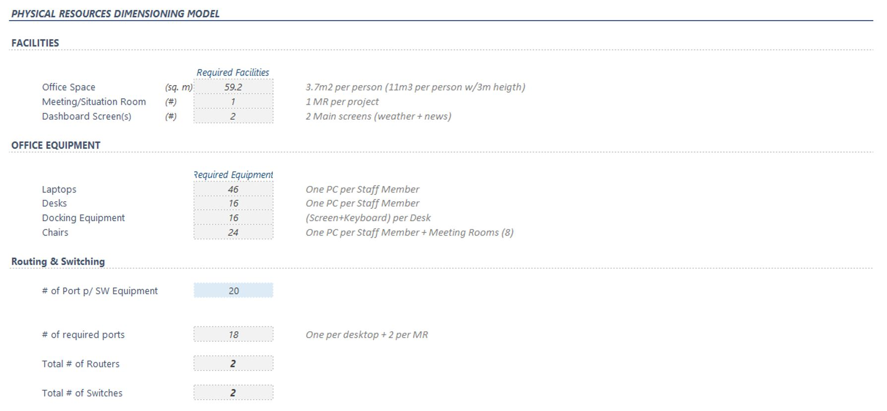

This section provides an overview
of the systems and the most common tools used to support the network operation,
and aspects to consider for the NaaS operator evaluation and selection of tools
to be incorporated into their NOC.
There are several tools in place
for a NOC to achieve its objectives. The most widely used are the service desk management
tool, a network fault management system, a geographic information system, network
performance management system and network configuration management systems.
These will be reviewed in the following sections.
5.1.1
Service Desk Management Tool
This tool is used for the
documentation of all incidents, problems and changes that are being worked on
the network at any given time. It can be considered one of the main tools used
by the NOC, as it enables all the team to have a proper mechanism to document
all activities surrounding each incident, problem or change ticket.
A proper tool for documentation
aids the team as they can know exactly what the status of any ticket is, what
are the next items to be solved and what needs to be followed-up. It also
enables reporting, which serves as the basis for governance activities:
revision of the NOC performance, KPIs, and SLAs.
A full service desk management
(SDM) tool is an immensely powerful tool that incorporates modules for incident
management (incident tickets), problem management (problem tickets) and change management
(change tickets). It also includes a Knowledge Base module (KB Articles) that
serves as a repository for all the KB information used by all NOC teams,
updated with key past experiences and lessons learned for future reference and
improvements, as previously discussed on the problem management process
section.
Another alternative to consider
is to have a ticketing tool instead of an SDM tool if focus will be set on
fault restoral and less on problem or change management. This will be further
discussed in section 5.2.
When choosing the appropriate
tool, one point to consider is the scheme of collaboration between the NaaS NOC
with the tenant NOCs. An automated mode will require the SDM/ticketing tool to
communicate to the tenant NOCs. In this scenario, the tool must support a
standardized interface towards the tenant NOC for easier and automatic TT
sharing.
Examples of commercial and
free/open-source tools are provided in Table 3.
|
Commercial
Tools
|
Free/Open Source Tools
|
|
BMC Remedy ITSM
|
OTRS Community ITSM
|
|
ServiceNow ITSM
|
CNTS C-Desk
|
|
Cockpit ITSM
|
Freshwork Freshservice
|
Table 3 — Commercial vs
Free/Open Source Service Desk Management Tools
5.1.2
Network Fault Management System
A NOC needs a visible medium to
monitor alarms which is accomplished by a network fault management system or network
monitoring system as described in the Network Monitoring Architecture module.
This tool, along with the service desk management tool covered earlier, are the
heart of any NOC organization. This tool enables the network surveillance
function, as alarms are monitored and observed by the NOC technicians, and
therefore ticketed for resolution following event and incident management processes.
This tool provides the NOC tier 1
team basic alarm functionality to acknowledge alarms (i.e., mark an alarm as
observed and being analyzed), journal alarms (i.e., introduce text to the alarm
indicating trouble ticket opened, or change associated to alarm, or other
information deemed necessary) and clear alarms (i.e., set an alarm as already
worked and dismissible from further work).
There are two common options
commonly available for NOCs regarding fault management tools: one of them is
having an umbrella network management system. An umbrella system helps the
NOC organization by having all alarms, regardless of the network element
vendor, available for monitoring on a single tool. This type of tools can
interact with the service desk management tool to create tickets directly from
the alarming tool or to append alarms directly to an existing incident ticket.
The other option is to have the tier
1 teams monitoring the different EMSes directly. These EMS tools have all the
basic functionalities needed for network surveillance (i.e., acknowledge
alarms, journal alarms, clear alarms).
Like the previous section, the
tools from network fault management should be capable of importing and
exporting the alarms to synchronize the current faults of the networks (NaaS
and MNOs). If customer MNOs and NaaS agreed to automate the process, the fault
alarms should be shared automatically between systems by a directly connected
interface. Its important to note that not all the fault alarms should be
shared, but only those relevant to customer MNO service.
Examples of umbrella NMSes and EMSes
are provided in Table 4.
|
Umbrella NMS
|
EMS
|
|
IBM Tivoli Netcool/OMNIbus
|
Huawei U2000
|
|
Teoco Helix Fault Management
|
Nokia NetAct
|
|
Atrinet NetACE
|
Ericsson OSS-RC
|
|
Samsung LSM-R
|
Table 4 — Umbrella NMS vs
EMS Tools
5.1.3
Geographic Information System (GIS)
The GIS tool serves as a
one-stop-shop for all items needed for troubleshooting for a particular site. A
GIS tool is a support tool for NOC technicians to have all information ready
and available in a visible, fast way.
This tool is used to obtain all
relevant information about a particular site, such as:
- Address
- Coordinates
- Network configuration
- TX information
- Tower company information
- Deployment information
- Acceptance details
- Site inventory and bill of materials
Sharing information between the NaaS operator NOC and
tenant NOCs is crucial to solve problems quickly and effectively. If the
agreements between NaaS operator and MNOs establish the need to have full
access to GIS data, the GIS tool must support a standardized interface towards
the tenant NOC for remote collaborative work. Besides, the NaaS Operator should
grant access permission to certain GIS information (e.g., Tx information,
coordinates, and network configurations relevant to a certain MNO) of the
project so the tenant NOCs would only have access to the information important
to them.
Examples of commercial and
free/open-source tools are provided in Table 5.
|
Commercial Tools
|
Free/Open Source Tools
|
|
Esri ArcGIS
|
Qgis
|
|
Teleworx Mapvista
|
Google Earth Pro
|
Table 5 — Commercial vs.
Free/Open Source GIS Tools
5.1.4
Network Performance Management System
This tool aids the NOC
organization to monitor the performance of the network in a more accessible
manner. This is strategic for teams focusing on network performance indicators
or for teams investigating network degradations before they are reported by end-users.
Network performance can be categorized into RAN/CORE KPIs and IP/TX KPIs.
Performance Management tools
enable the teams to analyze trends on several pre-defined KPIs, and granularity
is often offered from months down to hours perspective. Another useful feature
is to enable teams to create their own KPIs based on the available metrics
offered by each element in the network, or put in another way, to customize the
indicators for a far more operator-coherent experience. Further details are
provided in the Network Monitoring Architecture module.
Analogous to section 5.1.2, if
the agreements with customer MNOs stipulates a certain degree of collaboration
level, the connection through a direct standardized interface from NaaS operator
NOC to tenant NOCs will be mandatory for the tool to share performance KPIs
(the interface should work on both ways so involved parties are aware of the
performance of one another). Its important to note that not all the KPIs
should be shared, but only those relevant to a certain MNO.
Performance
Management tools are usually classified based on the domain in RAN/Core and
IP/Transport. Table 6 provides examples of commercial and free/open-source
tools by domain.
|
RAN/CORE Network Performance
|
|
Commercial Tools
|
Free/Open Source Tools
|
|
Nokia Performance Manager
|
Grafana
|
|
Ericsson Network Manager
|
Kibana
|
|
Teoco Performance Management
|
Prometheus
|
|
Netscout nGenius
|
|
|
BWTech Netchart
|
|
|
IP/TX Network Performance
|
|
Commercial Tools
|
Free/Open Source Tools
|
|
Solarwinds Network Performance
Monitor
|
Nagios
|
|
Paessler PRTG
|
Zabbix
|
|
Progress WhatsUp Gold
|
LibreNMS
|
|
CACTI
|
Table 6 — Commercial vs
Free/Open Source Network Performance Management Tools
5.1.5
Network Configuration Management System
This system helps the NOC to
oversee the configurations of the network equipment in a centralized fashion.
This is helpful for teams responsible for change management or for teams in
charge of troubleshooting.
Configuration management tools
have three main advantages: to help keep the network configuration consistent,
to ease the problem solving, and to allow the automation of the network. These
tools help to keep the consistency of the network since any difference in the
configuration for similar equipment can be spotted and corrected more easily.
It also aids the change management teams to monitor the changes on the
equipment in near real-time. Regarding the problem-solving process, having the
configuration files centralized and updated may reduce the time to provide a
solution. Lastly, these tools allow a network to be partially or fully
automated since having a centralized tool for configuration is the first step
towards network orchestration and automation.
As stated in previous sections,
the collaboration with tenant NOCs is key for effective work. Similarly, if
agreed by the Naas and customer NOCs, it can be necessary the direct connection
between the configuration management systems (e.g., through APIs, SNMP Traps,
or standardized interfaces). It is important to note that not all the
configurations should be shared, but only those relevant to a certain MNO.
Finally, it is important to note
that the NMS tools from different vendors can act as network configuration management
tools. The obvious limitation is that an NMS will only work for the equipment
from that vendor (some vendors would require more than one NMS tool). If the
NaaS Operator Network is built of equipment from several vendors, the number of
NMS tools will increase accordingly.
Table 7 provides examples of
commercial and free/open-source tools.
|
Commercial Tools
|
Free/Open Source Tools
|
|
Atrinet NetAce
|
ConfiBack
|
|
TrueSight Automation for Networks
|
rConfig
|
|
Teoco SmartCM
|
Westermo WeConfig
|
|
Comarch Mobile Network Configuration Management
|
|
|
ManageEngine Network Configuration Management (NCM)
|
|
|
SolarWinds Network Configuration Manager
|
|
Table 7 — Commercial vs
Free/Open Source Network Configuration Management Tools
In the previous section several
tools that are part of a NOC ecosystem were introduced. Now aspects to consider
for tool evaluation and selection will be presented. First, critical
operational tools will be discussed, followed by optional support tools.
5.2.1
Critical Operational Tools
There are a couple of tools that
are critical and must be part of the NOC solution: the network fault management
tool, the service desk management tool and configuration management tool. The
first one is the key component of network surveillance and event management;
the second one is vital for incident management and fault management teams; and
the third is vital for change management and fault management teams. Below the
recommendations and considerations to be taken into account by the NaaS operators
for the selection of these tools are provided:
- Network Fault Management Tool
An umbrella network fault management tool would be ideal
for any NOC organization, as it would enable the NOC tier 1 team to monitor all
network alarms from one single instance. However, there are two variables that
need to be considered for this type of tool. The first variable is
financial-oriented: budget constraints might prevent the operator from choosing
this alternative as commercial tools are costly not only from an acquisition
perspective but also from a maintenance perspective.
The second variable is process-oriented: full
implementation of this type of tools requires a heavy use of EMS
configurations, and on top of that, the actual tool needs to be configured and
optimized, along with training for its effective use.
A simpler, more cost-effective solution is to have the NOC tier
1 team to monitor alarms directly from each of the EMSes on the network. This
of course translates into a more complex scenario for the NOC engineer as
multiple tools need to be opened at the same time, and multiple windows need to
be monitored simultaneously. This also means that NOC technicians need to be
trained in each tool separately to be familiarized with each tool.
- Service Desk Management Tool
A full service desk management
tool can be of great aid for the NOC team, as it would benefit from having all
associated tickets in one single tool (incident management, problem management,
change management). This translates into a more agile organization, as all teams
speak the same language and know the same reference.
As mentioned before there are free SDM tools available in
the market, and some of them have open trials that can benefit a starting
organization as the team can get used to the interface and the way of working
before considering some of the commercial offerings surrounding such tools.
One important factor to consider for the SDM tool
incorporation is to review the actual processes that will be run by the NOC.
While the NOC will adhere to some form of event, incident and change management,
there is an area that needs to be reviewed like problem management.
If the organization will not consider having this process
in place, both problem tickets and the need for a knowledge base can be set
aside, lessening the requirement for a full SDM tool. There are some
organizations that use simpler tools like Microsoft Excel for change management
(keeping records and control of all change activities), and incident management
can be realized via a simpler ticketing system.
-
Network Configuration Management
Tool
As previously stated, the use of tools for network management
helps the NOC team to monitor the consistency of the configuration of the
network. It delivers to the organization the fastest and smoothest transition
to a full orchestrated network.
These tools will enable a NaaS operator to react faster to
changes in their network without impacting the agreed SLAs because it allows
near real-time monitoring of the configuration. It also helps to have better documentation
and organization in terms of change management and backup.
5.2.2
Support Tools
In the following paragraphs, the
GIS and the network performance tools will be discussed, which are support
tools that are optional depending on the needs of the NaaS operator.
- GIS Tool
While a full-fledged GIS tool can bring several
opportunities for an organization not only from an operational level, but
also for network and capacity planning or deployment there are other options
available that are less robust or that offer fewer features but still get the
job done from a NOC perspective.
While some of those options have been presented in the previous section, bear in mind a well-crafted
spreadsheet can offer at some extent some of the benefits for a NOC tier 1 team
without the costs associated to a GIS tool purchase and configuration.
- Network Performance Management Tool
A network performance management system brings value to an
organization that considers performance management and problem management into
their core functions and processes.
This type of tools can be greatly beneficial for a NOC team
as they enable organizations to be aware of performance degradations as they
occur, and often aid such investigations speeding up resolution times. Still,
if the NaaS operator decides to start operations without such focus on performance
management then the use of this tool becomes obsolete for the NOC.
This section presents a
discussion of the different scenarios available to the NaaS operator regarding
NOC implementation including staffing model, service levels, team dimensioning
and facility sizing.
There are two main models
available for NOC staffing that can be considered by the NaaS operator: insourcing
(i.e., building the NOC with internal resources as part of the NaaS organization)
and outsourcing (i.e., reaching out to a third party to take control of
operations), both of which will be covered in more detail in the next
paragraphs.
An optional third alternative
will also be presented, in which the NaaS operator may choose to outsource some
tasks while retaining the majority of their operations. This option will also
be covered after reviewing the first couple of models.
Regardless of the model to be
chosen, there are several key aspects that the NaaS operator will have to bear
in mind for the NOC implementation:
- Establishing the organizational structure
- Defining NOC policies and procedures
- Aligning NOC scope & role to
business and customer expectations
- Selecting the correct system &
tools environment
All these aspects have been
outlined in this document in the previous sections, and the operator will have
to define the implementation strategy that best fits their organization taking
all these factors into consideration.
A closer examination of the implementation
alternatives is presented below:
- Insourced Model
The insourced model consists of the NaaS operator
establishing their own NOC, taking full control of all operation and
maintenance activities and functions for their network. An own consolidated and
centralized hub for network control can transform the NOC into an engine for
revenue growth and an area for competitive differentiation for an operator.
In the insourced model, the NaaS operator sets all the
structure, functions, processes and tools that will be incorporated into their NOC
solution. All documentation, planning and reporting will be tackled by the
organization as well.
Insourcing implies that all NOC staff will be evaluated,
selected, and onboarded by the NaaS operator, starting with the management team
all the way down to the engineers performing each function at the NOC. This
also means that the Naas operator will have to cope and plan for attrition as
well as to plan and schedule for training needs (for network architecture,
network technology and governing processes).
- Outsourced Model
For the outsourced model, the NaaS operator brings a third
party to perform all associated activities related to the operation &
maintenance of the network. Looking for a NOC service provider means that the
operator will need to find a company that has the capability to monitor their
network environment. All the aspects that were mentioned in the previous section will now fall into the NOC providers
hands.
Outsourcing offers relief from the staffing and skills
dilemma, allowing organizations to attain almost instant network expertise for
maximizing network performance.
When an operator chooses to outsource their NOC, along the
contracts and agreements made between both companies, the operator can set the
requirements for all aspects of the operation, such as the structure to be
followed, the functions and processes to be put in place and a recommendation
for the tools to be incorporated as part of the providers solution.
Some of the questions that the NaaS Operator should make to
the potential partners are:
- What is the location of their NOC?
Potential considerations include communication/language/cultural difficulties,
service lag times, outage response times that accompany hiring off-shore or
near-shore providers.
- Can they scale to support the NaaS operator
business? Major advantages of outsourcing include flexibility and scalability
and these capabilities should be considered from the start.
- Is their staff on-call or on-site? What
type of coverage solutions do they offer? If the NaaS operator decides to
outsource network monitoring for full 24x7 coverage, they have to realize some
providers support their customers via an on-call rotation, which may not suit
the response times needed.
- How will their NOC access NaaS operators
network? Seek for high-availability redundancy options as monitoring is crucial
and the NaaS operator cannot afford to have gaps in coverage due to unforeseen
circumstances.
- Is their platform flexible and
customizable, or restricted to out-of-the-box functionality? The systems should
have the advantage of being customizable, satisfying the NaaS operators
specific needs.
- Does the NOC provider outsource any of
the assigned tasks? Some outsourced providers may in turn outsource part of the
tasks they have been contracted for. Subcontractors should follow the same
obligations acquired by the service provider.
- How does the NOC alert and handle
outage escalations? Flexibility could involve different modes of outage
notification depending on when the event occurs: an email or SMS on normal
working hours, and an emergency phone call after normal working hours.
- How long does it take to implement the
outsourced solution? Once agreements are in place, will the provider need weeks
or months before they can have the NOC up and running?
- Mixed Model
A mixed solution can also be put in place by the NaaS
operator and a third party. In this alternative, the NaaS operator chooses
which tasks will have to be fulfilled by the external provider and which ones
the NaaS operator will assume. This may make sense in an environment in which a
multi-vendor distributed network may present difficulties for the operator to
acquire the experienced personnel needed and chooses to outsource some parts of
the network, therefore.
6.1.1
Staffing Model Selection Guidelines
The insourced model offers full
control of the operations to the NaaS Operator, allowing for changes in
process/functions to be completed according to the business needs as soon as
possible. Compared to the costs associated with the outsourcing model, the insourced
model offers a way to drive down costs as needed.
However, insourcing may render
difficulties for the NaaS operator as all hiring and training must be performed
by them. Because of this, the insourced model is recommended for mature
organizations with good human resources practices in place and confidence in
the tools/processes to be implemented or for NaaS operators with small networks
and tight budget constraints.
The outsourced model is often a
costly option, still it offers several benefits as the NaaS operator is
liberated from all the HR burden, including training and retaining highly
skilled professionals, as well as tool selection and implementation. This is
often one of the most difficult scenarios, especially at the beginning of
operations, as NOC engineers have to learn at first a networks architecture
and technology, the entire range of processes built around the NOC, and tool
utilization.
A NaaS operator should select the
outsourced model if the costs associated with outsourcing outweigh the costs
associated to having an operation that is not working properly or that is not
mature enough.
The mixed schema is suitable for
NaaS operators that have maturity in certain aspects of the operation but are
struggling in other areas, or for operator facing a multi-vendor distributed
network experiencing difficulties to hire personnel with the right skills and
knowledge for such challenge, as the third party can assist the operator
fulfilling such gaps while the company gains such knowledge and skills.
The operational model of the NaaS
operator will always rely on a close relationship with other MNOs, mainly as customers.
Under this assumption, the NOC needs to be in constant communication with NOCs
from other MNOs (tenant NOCs). The collaboration strategy will focus on areas
on which is critical to maintain a level of communication. There are basically
four communication areas that need to be addressed by this strategy:
- Ticketing (See section 5.1.1)
- Fault management (See section 5.1.2)
- Billing/revenue reconciliation
- Performance monitoring (See section 5.1.4)
Figure 9 shows the possible NOC
interaction areas (A-D, as previously stated) for the collaboration strategy:

Figure
9 — NaaS-MNO inter-domain collaboration diagram
The collaborative strategy for
the NaaS operator and their customer MNOs begins with the cooperation on the event
management process. In this process, any alert or notification raised by any
service, resource or monitoring tool is reported in the form of TTs. These TTs
are analyzed and solved or escalated by tier 1 NOC in later steps. Ticketing is
the most crucial activity since it represents the main input that drives all
the NOC activities.
The next task in the NOC overall
process is the fault management on any anomaly reported by event management. In
this phase, the communication is vital: the faster, the better. An earlier and
clearer exchange of information between involved parties would lead to a
quicker resolution. The tier 2 and tier 3 support following the fault management
stage can be on the NaaS or MNO side (depending on the NOC implementation
model).
The other two processes for which
a lower degree of integration of systems is required are performance management
and billing & revenue reconciliation. The first refers to the constant
monitoring of the network looking for poor performance of the network or opportunity
areas where to increase the performance. The integration of performance systems
can lead to a better understanding of the network and cooperative measures or
changes can be implemented more effectively.
The last process is the billing
and revenue reconciliation. This stage is key towards a successful business
partnership between the NaaS operator and their customer MNOs. The purpose of
this task is to reach agreements on the periodic billing or revenue amounts
based on the associated costs and profits of the network operation. Again,
communication is the key to avoid misunderstandings and to efficient the
overall process.
There are two generic modes for
all the integration of the communication conduits mentioned above: the manual
and the automated. The first is characterized by a minimum or non-existent
integration of the involved systems and relying on basic and slow human
one-to-one or one-to-many communication. The automated mode targets for almost
full integration of the systems. The intercommunication of these systems is based
on automatic request and replies which lead to a near-real-time interaction.
In subsequent sections, the
method of systems integration and its implications are explained.
6.2.1
Ticketing
As previously stated, ticketing
is one of the pillars for NOC activities, so it is a mandatory item in the
collaboration strategy. The purpose of this system integration is the fast and
clear exchange of information for any irregularity in the network or the
service. For any NaaS operator, this is mandatory for a healthy relationship
with their customer MNOs.
There are several advantages when
implementing an efficient ticketing process: reduction in the response times
when an abnormality in the services/network occurs and decreasing of the
overhead for the MNOs when opening a ticket. The disadvantage would be that the
integration of systems can be hard to achieve when the already implemented
tools do not allow this option.
Manual Mode
This scheme avoids the system
integration with ticketing from tenant NOCs. The tenant NOCs may have
independent tools from NaaS operator, and no special feature or interface is
needed. The collaboration is via phone calls or formal emails. When an email or
phone call takes place to open a TT, the NaaS Operator NOC personnel must
manually insert the details into their SDM/ticketing system. This method could
lead to errors in capturing the details of the problem besides the long times
for reporting.
Automated Mode
The SDM/ticketing systems are
interconnected so the TT can be raised directly by the customer MNO and the
NaaS operator NOC can initiate the process towards the solution. After the
resolution of the problem, the NOC can close the created ticket and the tenant
NOCs are informed of the outcome almost instantly. An example of this system is
a web- or cloud-based ticketing.
6.2.2
Fault Management
Fault management is the second
pillar of NOC functionality and mandatory in the collaborative strategy. The
system integration objective is to reduce the necessary time for problem
solving and escalation time towards the compliance of pre-agreed SLAs.
The advantages and disadvantages
are quite like the ones of ticketing due to the closeness of these two
processes. It reduces the time for problem-solving since it offers alarms and
diagnostic elements almost instantaneously. Furthermore, it enables the
operator to have a shared source of truth and optimizes the overall process by
eliminating points of human failure. On the other side, although the
integration of FM systems is more feasible (compared to the ticketing), it is
not always possible due to lack of compatible interfaces. It is required that
the interfaces for interconnection are compatible from system to system.
Manual Mode
In the manual mode, the fault management
systems are not interconnected and the exchange of information such as alarms
of network/service is done by sharing a compendium of alarms files if the tool
allows it. These files can be shared by email or any other formal channel.
Automated Mode
When the systems are
interconnected and the alarms & notifications are delivered automatically
between the fault management tools, the information of the alarm is not
modified, and the integrity is preserved. The update of the notification is in
real-time and the analysis of the issue is done with no delays. The fault management
tool uses a request/response paradigm to communicate through standardized
interfaces (e.g., SNMP traps, API exposure, NETCONF protocol based). Examples
of these are umbrella tools and the interconnection of EMS/OSS systems.
6.2.3
Performance Monitoring
Performance Monitoring has less
criticality since it is an extended function of the NOC and can be considered
as optional. Here, the purpose of the integration is to draw more attention on
the performance KPIs so its easier to find areas of opportunity for
enhancements of the network.
The advantages are that more
people can analyze the performance KPIs and it is more likely to find a root
problem or any improvement in the usage of the network. The disadvantage would
be that the integration is more challenging to achieve than the previous systems
since, in this case, the access should permit MNOs to only access their own
KPIs. If access is not properly controlled, a privacy issue may be raised. In
this case, the access management is more challenging since the permissions have
more precise delimitations.
Manual Mode
When implementing a manual mode,
the exposure of the KPIs may be done through periodic reports or presentations.
Since it is not a mandatory requirement, these reports may not always be shared
and should be requested via formal email or phone call. This process would
require a certain degree of organization between the NaaS operator and the
involved MNO. It also needs more human effort into generating these
reports/presentations according to the total number of MNOs.
Automated Mode
In this method, the systems
integration is achieved by connecting the system tools to share the appropriate
KPIs to the corresponding MNOs. One MNO should only have permission to look
into the KPIs that are relevant to it. The coordination between tools should be
more precise, but the results are the monitoring of the network performance in
real-time.
6.2.4
Billing and Revenue Reconciliation
On the business side, the
collaboration strategy contemplates the reconciliation of billing and, when it
applies, revenue. The purpose of the integration of this system is to assure
the data integrity and provide clarity of the billing and revenue. This must be
considered mandatory to the collaborative strategy since the heart of the
relationship between the NaaS operator and their customer MNO is
business-based.
The pros of having these systems
integrated are that the data used for billing and revenue clarifications is
unmodified as a unified source of truth. Moreover, continuous monitoring can
lead to better business estimations without the need of waiting for the
periodic reports. The con is that data must be selected before shared with MNOs
to avoid any information leak to other MNOs. This would also involve the
overseeing of access to the systems involved.
Manual Mode
In this mode, the billing and revenue
reconciliation is done by periodic meetings with business areas from a specific
MNO. The MNO and the NaaS operator need to have implemented independent tools
to have a formal discussion if the processed billing data differ. In this
scheme, the human effort is increased by the number of MNO, since a customized
report and an isolated meeting should be carried out per MNO.
Automated Mode
The automated mode considers the
integration of the billing systems at BSS level. The information is
pre-processed only to select the pertinent information to be shared per MNO. A
formal meeting is always a good practice when billing data differs. Here, the
BSS has more standardized interfaces towards other BSS, so the integrations are
easier.
6.2.5
Examples
The level of collaboration
between the NaaS operator NOC and the tenant NOCs determines the required
capabilities of the tools. In the next subsections, two examples are presented:
firstly, one to show a scenario where every collaboration channel is manual and
secondly, one with the most typical case for a NaaS Operator.
6.2.5.1
Rigid Organizational Model
In this type of organization, all
the processes are done manually. This means that ticketing, fault & performance
management, as well as billing and reconciliation are executed without any
system integration. The communication channels are traditional (e.g., phone
calls, email).
This organizational model is
recommended as a starting point for operators who lack technical skills to
integrate tools through standardized interfaces or when the operator has
limited resources to implement the tools. It also helps reducing times for the
NaaS operator NOC to begin to operate.
The main points of this model are
contained in Table 8.
|
Level of system integration
|
None
|
|
Ticketing coordination level
|
Phone call
|
|
Fault management coordination level
|
Email
|
|
Performance management coordination level
|
Only by email
or formal request
|
|
Billing and revenue reconciliation coordination level
|
Call Data Registries
(CDRs) provided to the customer MNOs
|
Table 8 — Collaboration level
for rigid organizational model.
This model carries the least
effort in terms of integration, but it also requires more human effort.
6.2.5.2
Typical Organizational Model
In the typical model, some tasks
are partially automated, and others are kept manually since the effort to
integrate the systems overcome the advantages.
This organizational model is
recommended as the NaaS operator NOC matures if the starting point was the rigid
organizational model. The level of collaboration between the areas should
always consider the effort of implementation versus the advantages that it
implies when deciding. This scheme is also recommended to operators who have
the necessary budget/human resources or technical skills to deploy such
integration.
The main points of the typical
model are as follows:
|
Level of system integration
|
Most crucial
operational activities (ticketing and fault management) and the business one
(Billing/revenue reconciliation)
|
|
Ticketing coordination level
|
Web-/cloud-based
system from NaaS operator
|
|
Fault management coordination level
|
Standardized
interface from NaaS operator and vice-versa.
|
|
Performance management coordination level
|
Periodic
reports
|
|
Billing and revenue reconciliation coordination level
|
Connection at
BSS level
|
Table 9 — Collaboration level
for typical organizational model.
The web-based ticketing is an
efficient way of enabling the NaaS operator to avoid the human point of error
when issuing a TT; besides, it allows the NaaS operator for easy management of
the TT. The FM is considered key to a combined work, so the systems are fully interconnected,
and this interconnection makes the problem solving smoother. Since the performance
management is optional, a standard periodic reporting is enough. Finally, the
decision of billing/revenue reconciliation integration allows the NaaS operator
to have a better relationship with their customer MNOs.
Service
levels specify the way that an incident is treated and the expected times for
response and restoration based on the severity of the incident. Therefore, the
first thing that needs to be defined by the NaaS operator is a criticality
matrix which specifies the classification of incidents into categories or
severities.
There are typically four
severities deployed in most NOC organizations: critical, major, medium and minor.
The NaaS operator must decide which scenarios fit each category, for which an
initial recommendation is provided below:
●
CRITICAL
- Several sites out of service. This can be adjusted to a fixed
number of sites, the number of end-customers being impacted, or a
percentage of the sites in the region/cluster/market.
- Loss of visibility to a network element manager or system.
- Loss of a single equipment (core or aggregation).
- Loss of
a regulatory requirement, such as emergency call handling.
●
MAJOR
- Single site out of service, or below the number of sites defined for a critical event.
- Loss of redundancy (e.g., circuit, equipment)
- Reduction in trunking capacity
- Loss of card (core, aggregation).
●
MEDIUM
- Sectors or carriers out of service on a single site.
- Alarms on core/aggregation equipment without service impact.
- Performance
degradation on several sites.
●
MINOR
- Events without service impact.
- Performance
degradation on a single site.
After the
criticality matrix is set, the NaaS operator must set two variables for each
category:
- Response Time The time in which the NOC must respond with a trouble
ticket to any alarm or report occurred
- Restoration Time The time in which all services/faults impacted must be
restored
The first variable is strictly
NOC dependent, and is usually expressed in minutes (X minutes from alarm to
ticket creation). The second variable needs consideration of several factors,
including the agreed contractual SLAs with other parties (power companies, fiber/copper
companies, tower companies, field maintenance) and their escalation paths. For
instance, an operator might set the following service levels shown in Table 10:
|
Severity
|
SLA
|
Response Time
|
NOC Time
|
NaaS Operator Restoration Time
|
Driver
|
|
Critical
|
8 hours
|
15 minutes
|
30 minutes
|
7 hours 15 minutes
|
Ticket Creation: 15 minutes | Troubleshooting: 30 minutes
| Restoration Tasks: 7 hours 15 minutes
|
|
Major
|
12 hours
|
30 minutes
|
30 minutes
|
11 hours
|
Ticket Creation: 30 minutes | Troubleshooting: 30 minutes
| Restoration Tasks: 11 hours
|
|
Medium
|
24 hours
|
60 minutes
|
60 minutes
|
22 hours
|
Ticket Creation: 60 minutes | Troubleshooting: 60 minutes
| Restoration Tasks: 22 hours
|
|
Minor
|
48 hours
|
2 hours
|
2 hours
|
44 hours
|
Ticket Creation: 2 hours | Troubleshooting: 2 hours |
Restoration Tasks: 44 hours
|
Table 10 — Service level setting
example
In addition to response time and
restoration time, there is another vital service level agreement that needs to
be set in place, which is the network availability. Network availability
targets are established throughout the high-level network architecture stream;
however, as part of the NOC implementation, the NaaS operator needs to set the
expectations in line with the relative maturity of the business and the
network.
During NOC implementation, the
NaaS operator must assess if the target availability can be reached,
considering the factors below:
- What is the acceptable outage window for the business?
- What impact will the outage have on the business in terms of lost revenue, customer satisfaction, or business reputation?
- What is the different providers average mean time to restore (MTTR) when an outage occurs?
- Scheduled maintenance windows are not considered as unavailable time.
- If for any reason, the target
cannot be met, the NaaS operator should re-define the target to a reachable
value that meets the need of the business, offers an appropriate level of
maturity, and will not jeopardize key customer relationships.
Once that the staffing model and
the service levels have been defined, the NaaS operator must design and
dimension the NOC organization. The following subsections address the NOC organization
design and dimensioning, respectively.
6.4.1
NOC Organization Design
Based on section 3.2, the NaaS operator
can select a configuration for the NOC organization. Following recommendations
on section 3.2, three typical configurations for a NOC organization can be
identified:
●
CONFIG 1
✔ Tier 1 performs network surveillance + fault management
✔ There are allocated resources for both performance management
and access management + field dispatch
✔ Tier 2 is separated into domains (i.e., RAN, TX, and core)
✔ There is a focused resource for OSS & tools
✔ There is one team leader per shift
✔ On the management side, there is one leadership position
for tier 1, one for TX, one for core, both a problem and a change manager, an incident
manager per shift and a general NOC manager
●
CONFIG 2
✔ Tier 1 performs network surveillance + fault management + access
management + field dispatch
✔ Tier 2 performs fault management tier 2 activities across
the board for all domains, plus performance management
✔ There is a focused resource for OSS & tools
✔ There is one team leader per shift
✔ On the management side, there is one leadership position
for tier 1, one for tier 2, an incident manager per shift and a general NOC manager
●
CONFIG 3
✔ Tier 1 performs network surveillance + fault management + access
management + field dispatch + some tier 2 activities (i.e., enhanced tier 1)
✔ Tier 2 performs fault management tier 2 activities across
the board for all domains, plus performance management plus OSS & tools
activities
✔ There is one team leader per shift
✔ On the management side, there is an incident manager per
shift and a general NOC manager
The NaaS operator can choose one
of the above configurations or define a customized configuration based on their
own organizational requirements and constraints. If thats the case, guidance
in section 3.2 can be applied with such a purpose.
6.4.2
NOC Organization Dimensioning
To establish an organizational
structure, several factors need to be taken into consideration:
- Number of RAN sites
- Number of regions to be considered
- Number of core sites
- Number of work shifts
- Configuration type (based on the section above or custom configuration)
- Number of customer MNOs
This information will aid the
NaaS operator to estimate the dimensioning of the NOC team. For this purpose,
the NOC dimensioning tool
displayed in Figure 10 is provided.

Figure 10 — Playbook NOC dimensioning tool
Each of the inputs above must be
inserted in the corresponding field. The first three fields (RAN sites,
regions, and core sites) are open, as shown in Figure 11:

Figure 11 — Open fields in the playbook NOC
dimensioning tool
The remaining two inputs (work
shifts and configuration type) have combo boxes enabled to choose from the
available options, as shown in Figure 12.

Figure 12 — Combo boxes in the Playbook NOC
dimensioning tool.
Once all the fields have been
completed, the tool will show a summary at the top showing the headcount of NOC
staff to be considered, as shown in Figure 13:

Figure
13 — Staff summary
Then a complete list of all the
resources will be presented, starting with the tier 1 and tier 2 teams as shown
in Figure 14:

Figure 14 — Tier 1 and tier 2 resources
This is followed by the rest of
the operators and the management team calculation, as shown in Figure 15:

Figure 15 — Miscellaneous operators and management
team
It is important to note that the
additional staff resources due to number of MNOs will not greatly impact on the
overall quantity. An additional 10% per MNO should suffice to cope with the
demands of the MNOs.
Finally, it is worth mentioning
that the tool is provided in Excel format which enables the NaaS Operator to
change the underlying dimensioning assumptions based on their own experience or
estimates.
To dimension the NOC facility the
NaaS operator must consider the peak number of resources that will be working
on the NOC premises, according to the dimensioning performed on the previous
section.
Through facility sizing the NaaS operator
will be able to estimate office space, office equipment and networking and
switching infrastructure, including office space that will be occupied, number
of meeting/situation rooms needed, number of restrooms, laptops, screens,
desks, chairs, and routing and switching equipment/ports.
Regarding the office space, it is
important to consider that access and security infrastructure will be needed, as
well as proper electrical/power distribution to be analyzed to offer a high
availability solution in case of a power outage.
The NOC dimensioning tool can
be used for facility dimensioning based on the headcount for the NOC team, as
shown in Figure 16:

Figure 16 — Playbook NOC dimensioning: tool
facility sizing


 $$zoom$$Figure 5 ' Service incident management
high-level flowchart
$$zoom$$Figure 5 ' Service incident management
high-level flowchart